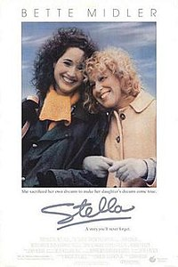

Sugar Rush is a 2019 Nigerian crime action comedy film written by Jadesola Osiberu and Bunmi Ajakaiye, and directed by Kayode Kasum. The film stars Adesua Etomi, Bisola Aiyeola and Bimbo Ademoye in the lead roles.[1] The film had its theatrical release on 25 December 2019 coinciding Christmas and opened to mixed reviews from critics.[2][3] Despite the mixed reviews, the film became a box office success and became the fourth highest grossing Nigerian film of all time

To All the Boys I've Loved Before is a 2018 American teen romantic comedy film directed by Susan Johnson and written by Sofia Alvarez. The film stars Lana Condor, Noah Centineo, Janel Parrish, Anna Cathcart, Madeleine Arthur, Emilija Baranac, Israel Broussard and John Corbett. The movie is based on Jenny Han's 2014 novel of the same name, and was released by Netflix on August 17, 2018.

Dolemite Is My Name is a 2019 American biographical comedy film directed by Craig Brewer and written by Scott Alexander and Larry Karaszewski. The film stars Eddie Murphy as filmmaker Rudy Ray Moore, who is best known for having portrayed the character of Dolemite in both his stand-up routine and a series of blaxploitation films, which started with Dolemite in 1975.
I'm Not a Robot is a South Korean television series starring Yoo Seung-ho, Chae Soo-bin and Um Ki-joon. It is written by Kim Sun-mi and directed by Jung Dae-yoon. Producing the series for MBC is May Queen Pictures. It aired on MBC from December 6, 2017 to January 25, 2018 on Wednesdays and Thursdays at 21:55 (KST) for 32 episodes.

Stella is a 1990 American drama film produced by The Samuel Goldwyn Company and released by Touchstone Pictures. The screenplay by Robert Getchell is the third feature film adaptation of the 1923 novel Stella Dallas by Olive Higgins Prouty. Previous film versions were Stella Dallas (1937) and the silent film Stella Dallas (1925).
The title character is a vulgar and unfashionable single mother living in Watertown, NY, who, determined to give her daughter Jenny all the opportunities she never had, ultimately makes a selfless sacrifice to ensure her happiness. This film version differs from earlier versions in that Stella never marries the father of her child, and in fact, declines his proposal early in the film.